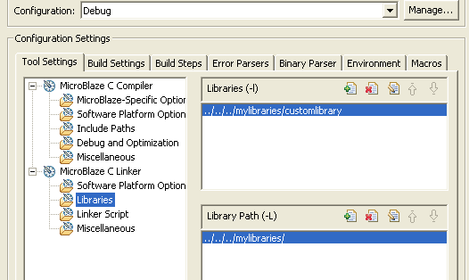

SDK application projects
Project file views
You can add libraries and library paths for Managed Make projects. If you have a custom library to link against, you should specify the library path and the library name to the linker.
To set properties for your project:


SDK application projects
Project file views

Working with C/C++ project
files
Copyright © 1995-2009 Xilinx, Inc. All rights reserved.